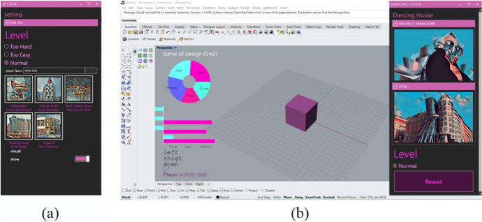

An architectural design serious game with Leap Motion, vision & voice.
HCI · Multimodal · Serious game · 2020

Summary
GaoDe, Game of Design, is an open-ended educational serious game that lets architecture students practice design through self-assessment inside a familiar CAD workflow. Instead of keyboard/mouse-only input, it uses a multi-modal natural user interface that combines hand gestures, machine vision, and offline speech commands to support playful exploration without “right or wrong” solutions.
Core idea: students compete with themselves, not each other
Outcome: immediate feedback for self-assessment and iteration
What students do
Select one of five iconic-building game modes (each with different rules)
Model and navigate in 3D using gestures + finger-count actions + short voice commands
Compare outcomes with reference targets, then iterate
Finish a session and reflect on choices (self-assessment)
Problem and goal
In early studio education, students often learn design concepts but struggle to apply them confidently in open-ended tasks. GaoDe reframes practice as a playful, low-risk environment: learners explore alternatives, receive feedback, and steer their own progress through self-assessment rather than external grading.
The goal is to strengthen the hands–eyes–mind loop central to design thinking, while staying embedded inside the CAD ecosystem students already use.
System architecture
Leap Motion (gesture recognition)
3D hand/finger tracking mapped to modeling actions and camera control
Example pattern: clench one hand; move the other around it to navigate
Webcam + CNN (finger-count recognition)
Simple, high-confidence actions using number of visible fingers
Example mapping: one finger = save; five fingers = finish
Offline speech (keyword spotting)
Short commands (e.g., “yes”, “up/down/left/right”, “stop”)
Intentionally gated (e.g., a yellow marker) to reduce accidental triggers
Offline voice commands with color-gated activation.
Five game modes
The initial GaoDe prototype includes five games based on iconic buildings. Each mode targets a different aspect of design perception and uses distinct interaction rules to sustain motivation and avoid repetition.